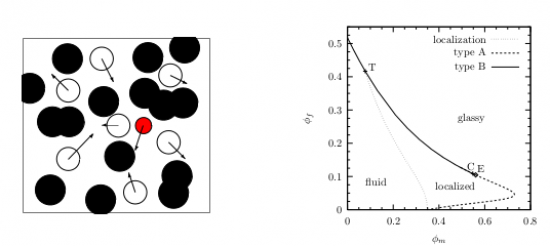

Dynamique de fluides dans des environnements désordonnés¶
Coordination : Wei Dong, Vincent Krakoviack
Thésard : Thomas Konincks
De nombreux systèmes d’importance pour la chimie sont caractérisés par la présence de désordre gelé (« quenched disorder » en anglais). Ainsi, la plupart des solides poreux naturels ou synthétiques présentent une forme ou une autre de désordre structural. Dans le cas des verres à porosité contrôlée ou des aérogels, par exemple, celui-ci prend un caractère extrême et est associé à l’existence d’un réseau complexe de pores très irréguliers en forme et en taille. D’autres cas comme celui des MCM-41 sont plus subtils : les pores sont de géométrie simple, essentiellement monodisperses et bien organisés, mais le matériau formant le solide est amorphe. Il y a donc une forme de désordre interfacial qu’on rencontrera aussi lorsqu’on s’intéresse aux phé- nomènes d’adsorption à la surface des verres inorganiques ou métalliques.
Il est bien connu que la présence de désordre gelé peut avoir un impact considérable sur les propriétés thermodynamiques, structurales et dynamiques d’un système. Les éventuelles transitions de phase peuvent être drastiquement modifiées et les propriétés de transport devenir anormales.
Pour étudier plus spécifiquement ces phénomènes de transport, une approche théorique (théorie de cou- plage de modes) a été developpée, qui permet l’étude à partir des premiers principes de la dynamique lente des fluides dans des environnements désordonnés. Il s’agit en fait de la fusion d’une théorie décrivant les liquides denses sans désordre d’une part, et d’une théorie pour les gaz dilués dans des matrices poreuses désordonnées denses d’autre part, le tout incorporant les subtilités relatives à la description thermodynamique et structu- rale des fluides en milieu désordonné. L’étude de modèles simples a mis en évidence une phénoménologie riche, avec parfois des résultats inattendus. Ces prévisions ont été pour une part significative confirmées par des simulations numériques.
Partant de ces résultats, le but de cette thèse est de développer des applications et des extensions de la théorie de couplage de modes existante pour étudier diverses situations dans lesquelles des fluides sont plon- gés dans des environnements désordonnés. Il s’agira en particulier d’ouvrir la problématique sur des systèmes pour lesquels il sera possible de tester les prédictions détaillées de la théorie expérimentalement et non plus seulement sur la base de simulations numériques. Les systèmes colloïdaux sont une cible de choix, grâce aux possibilités expérimentales offertes par les techniques de piégeage optique et de vidéo-microscopie.
Ce sujet repose à la fois sur des approches analytiques et numériques de physique statistique et se situe à l’interface de la physique et de la chimie.
Contributions du Centre Blaise Pascal à ce projet¶
Les calculs sont effectués sur les serveurs du PSMN. La création d’une file dédiée spécialement à ce projet est en discussion.